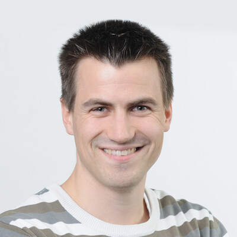

Christopher Schroers
I am a Research Scientist at DisneyResearch|Studios focusing on visual computing. More specifically, I am working on leveraging machine learning for image and video processing tasks such as super resolution, frame interpolation, and
compression. Previously, my research targeted panoramic video processing for immersive VR experiences and 3D reconstruction for set scanning.
Below is a list of recent publications.